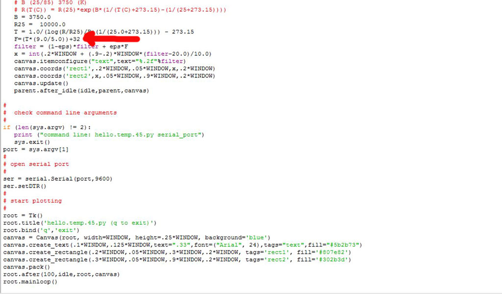
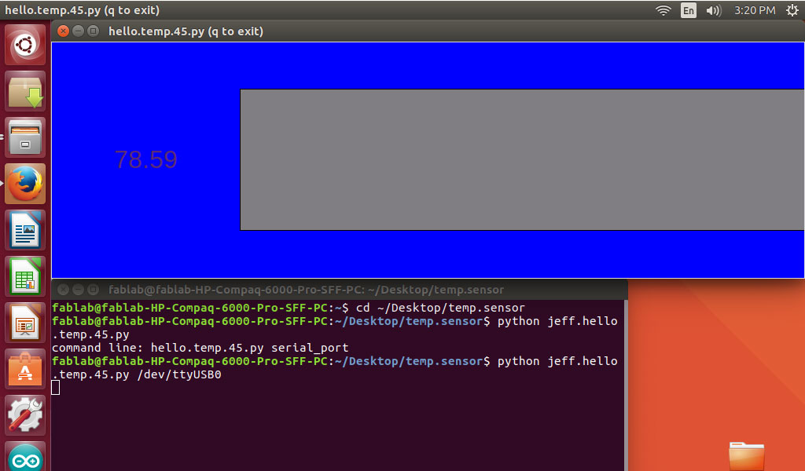

The Assignment for week 16 was to write an application that interfaces with an input or output device that we made. With all of the struggles that we have faced to this point using our Windows machines we finally conviced our IT staff to put a Linux machine down in our lab. Kayla and I decided to use this machine to try and complete our homework using Python and NumPy. Our first task was to work with an input device and I decide use a temp sensor to at least get our homework off the ground. Our basic goal was to work on editing the graphic display that you would see on the screen by taking information off the sensor. We used the hello.temp.45.py written for our temperature sensor. After taking a look around I was able to figure out that I could change some of the basic parameters controlling how it looked so I decided to change the size, font and soe of the colors for the display window.
When I was going through my programming for my LM temp sensor I learned that I needed to adjust the coding to convert from Celsius to Farenheit using a simple conversion of 9/5+32 in order to get the sensor to read in Farenheit.
Now that I had my file edited and had changed the coding to customize it to my liking I was able to move to poweringup the sensor and take readings. To do this I opened up termial and located the Temp Sensor folder I had saved on the desktop located at ~/Desktop/temp.sensor. Once in the folder I brought up my Python file: jeff.hello.temp.45.py. I next had to tell the terminal which port the FTDI cable was on which ended up being USB0. 
Python CodeThis is StoneWork, a free, fully standards-compliant CSS template designed by TEMPLATED. The photos in this template are from Fotogrph. This free template is released under the Creative Commons Attribution license, so you're pretty much free to do whatever you want with it (even use it commercially) provided you give us credit for it. Have fun :)